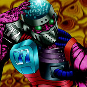

Jinzo #7

STATS
ATK: 500
DEF: 400DECK COST
Deck Cost per Card: 9Fusion List (34 Possible Fusions)
- Jinzo #7 + Air Marmot of Nefariousness = Giga-tech Wolf
- Jinzo #7 + Fairywitch = Disk Magician
- Jinzo #7 + Armed Ninja = Cyber Soldier
- Jinzo #7 + Crawling Dragon #2 = Cyber Saurus
- Jinzo #7 + Crawling Dragon = Metal Dragon
- Jinzo #7 + Eyearmor = Cyber Soldier
- Jinzo #7 + Hard Armor = Cyber Soldier
- Jinzo #7 + Hyo = Cyber Soldier
- Jinzo #7 + Kagemusha of the Blue Flame = Cyber Soldier
- Jinzo #7 + Kageningen = Cyber Soldier
- Jinzo #7 + Lesser Dragon = Metal Dragon
- Jinzo #7 + Little Chimera = Giga-tech Wolf
- Jinzo #7 + Little D = Cyber Saurus
- Jinzo #7 + M-Warrior #1 = Cyber Soldier
- Jinzo #7 + M-Warrior #2 = Cyber Soldier
- Jinzo #7 + Masked Clown = Cyber Soldier
- Jinzo #7 + Milus Radiant = Giga-tech Wolf
- Jinzo #7 + Mystical Sheep #2 = Giga-tech Wolf
- Jinzo #7 + Obese Marmot of Nefariousness = Giga-tech Wolf
- Jinzo #7 + Petit Dragon = Metal Dragon
- Jinzo #7 + Princess of Tsurugi = Cyber Soldier
- Jinzo #7 + Queen's Double = Cyber Soldier
- Jinzo #7 + Sectarian of Secrets = Disk Magician
- Jinzo #7 + Silver Fang = Dice Armadillo
- Jinzo #7 + Swordsman from a Foreign Land = Cyber Soldier
- Jinzo #7 + Synchar = Giga-tech Wolf
- Jinzo #7 + Tomozaurus = Cyber Saurus
- Jinzo #7 + Two-Headed King Rex = Cyber Saurus
- Jinzo #7 + Unknown Warrior of Fiend = Cyber Soldier
- Jinzo #7 + Vishwar Randi = Cyber Soldier
- Jinzo #7 + White Dolphin = Misairuzame
- Jinzo #7 + Wolf = Dice Armadillo
- Jinzo #7 + Wood Clown = Cyber Soldier
- Jinzo #7 + Yamatano Dragon Scroll = Metal Dragon